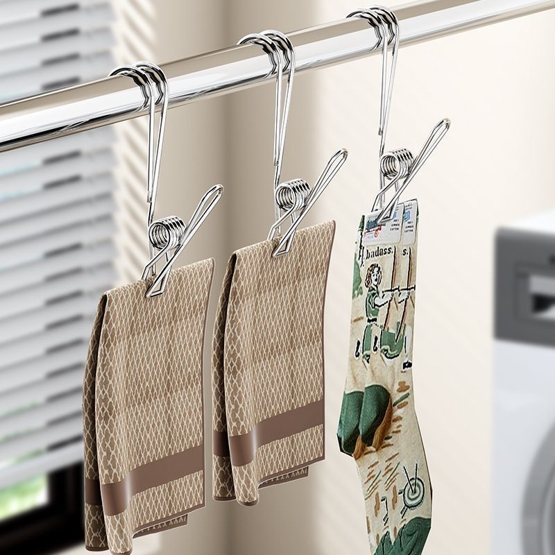

शेल्फ पर लैंप लटकाना | मूल, AI द्वारा अनुवादित
मैं अपनी लैंप को शेल्फ पर पीछे की ओर ले जाना चाहता था ताकि पढ़ते समय ध्यान भटकने से बच सकूं।
मेरी बेड शेल्फ पर सामानों की जटिल व्यवस्था के कारण, मैंने pinduoduo.com से एक हुक खरीदने का फैसला किया। कुछ दिनों बाद यह आ गया, लेकिन पार्सल स्टेशन से इसे लेने के बाद, मैं इसे घर में कहीं गुम कर दिया। इस वजह से मुझे वही उत्पाद फिर से खरीदना पड़ा।
आज, मैंने अचानक एक अलग तरीके की कोशिश करने का सोचा। मैंने केवल तार को एक X या U आकार में लपेटा और मुड़े हुए हिस्से को छेद में डाल दिया। इस तरह, लैंप शेल्फ से जुड़ा रहता है और नीचे नहीं गिरता।
मूल रूप से, यह वहां कुछ संतुलन बना देता है। लैंप गुरुत्वाकर्षण के कारण नीचे गिरना चाहता है, इसलिए यह तार को खींचता है। हालांकि, तार का ऊपरी हिस्सा छेद के ऊपरी किनारे से रुक जाता है, इसलिए इसे बाहर नहीं खींचा जा सकता।
फिर मैंने तार की मदद के लिए एक पेंसिल का उपयोग करने की कोशिश की, लेकिन पेंसिल छेद में फिसल गई। जब मैंने अंदर ध्यान से देखा, तो पाया कि शेल्फ के अंदर चीजें थीं। वे अंदर कैसे आ गईं? पहले, मैंने पाया था कि शेल्फ को खोलना मुश्किल था। ओह, असल में, इसे खोला जा सकता है।
तो अब समाधान और सरल हो गया। चूंकि मैं नहीं चाहता कि तार शेल्फ को बंद होने से रोके, मैंने तार को बाहर निकालने के लिए एक और छेद का उपयोग किया।
यह अनुभव रोजमर्रा की स्थितियों में आवश्यक सूक्ष्म, संदर्भ-जागरूक समस्या-समाधान को उजागर करता है, जिसे मैं AI द्वारा पूरी तरह से दोहराए जाने के बारे में संदेहपूर्ण बना हुआ हूं, भले ही इसकी तेजी से प्रगति हो रही हो।
 स्रोत: स्व-कैप्चर
स्रोत: स्व-कैप्चर
 स्रोत: Pinduoduo.com
 स्रोत: स्व-कैप्चर
स्रोत: स्व-कैप्चर